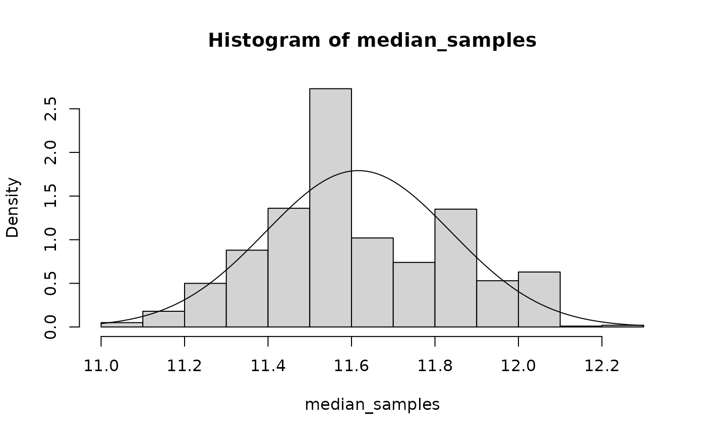

The Idea: A Bit of Magic
When you first learn about the bootstrap, it may seem a little magical. You seem to get a lot for free, in that you only need to resample your data a bunch of times in order to get a sampling distribution of any statistic you like.
Definition: Recall that we believe there is a “true value” of a population-level in the statistic. That is, the mean is a (unknown) number, \(\beta\) coefficients are true (unknown) numbers. The uncertainty in estimating \(\beta\) comes from the fact that we only have a finite sample from the entire population. If we imagine drawing many samples of length \(N\) from the population, then intuitively we know that you will get different values of \(\beta\) for each sample. This distribution of \(\beta\)s is called the sampling distribution. It is the distribution of a statistic due to sampling variation.
I want to emphasize two points, and then we’ll move onto coding.
The “Sample Analogue” and WLLN
When you bootstrap something, what you get back is a bunch of numbers. Those numbers are a random sample from a distribution! It is a random sample from the sampling distribution of \(\beta\).
To “conduct inference” on the \(\beta\)s, we just need to ask questions about this sample of \(\beta\)s that we’re given. This a fundamentally different way of doing statistical inference than the classical way of saying that \(\beta\)s are normally distributed with some distribution and then using critical values from the standard normal to accept/reject a hypothesis.
The law of large numbers along with the continuous mapping theorem gives us a lot of power. This basically tells us that we can take the average value of some function \(g\) in our sample of \(\beta\)s, and this is a good estimate of the true value of \(g\) in the entire population. Formally we write
\[ \frac{1}{B} \sum_{i=1}^B g(\beta_i) \overset{p}\rightarrow g(\beta) \]
I also want to point out that this sample analogue technique intuitively applies to other situations. The sample median of our \(\beta\)s is a pretty good guess of the population median. The 5%-95% interval of our sample of \(\beta\)s is a pretty good estimate of that 90% interval on the true value of \(\beta\).
Let’s make this more concrete. Say we are bootstrapping OLS coefficients from some regression, and we want to estimate the “turning point” of mage from Problem Set 2. We take all of these \(\beta\) samples and construct
\[ \theta_i \equiv -\beta_{mage}^i/(2\beta_{magesq}^i) \]
And now we can think of these \(\theta_i\) as draws from the sampling distribution of the turning point. If we take the mean of these \(\theta_i\), this is an estimate of the mean value of the turning point. If we take the 5th and 95th percentiles of the \(\theta_i\), this is a 90% confidence interval on the true value of the turning point.
Conclusion: With bootstrapping, you are generating a random sample of a statistic from a finite amount of data. This is the magic of resampling. To emphasize the generality, let me expand your idea of a statistic.
Bootstrap Works for Any Statistic
Defintion: A statistic is a function that takes in a sample of data and returns something. What that something is is very general. You can think about a statistic as an OLS coefficient (data in, linear regression out), or sample mean, or sample variance.
But you can also think bigger: nonparametric statistics, like kernel regression estimators, machine learning models… you don’t have to return a number, you can return a function, a data structure, basically anything that you can program. It truly doesn’t matter, if you can think of any sort of thing that takes in data and produces some output, then you can use the bootstrap to quantify the amount of uncertainty in the output.
How to Code It
As an example: We want to bootstrap the median wage in the HTV dataset.
Since bootstrapping is computationally straightforward, there’s nothing stopping you from doing it yourself. You just need a for loop:
library(haven)
library(tidyverse)
# Read in the data
data <- read_dta(system.file("HTV.DTA", package = "metrics.in.r"))
wage <- data$wage
n <- length(wage)
# make a vector to hold the output
median_samples <- numeric()
for (i in 1:1000) {
wage_resample <- wage[sample(1:n, n, replace = TRUE)]
median_samples[i] <- median(wage_resample)
}
# plot a histogram of the output
hist(median_samples, prob = TRUE)
curve(dnorm(x, mean(median_samples), sd(median_samples)), add = TRUE)
I overlayed a normal curve in the output above to show you that the median doesn’t look very normal! This might suggest that we would be better suited using the boostrap to answer statistical questions about it.
There are packages for that
One package that I really like for bootstrapping is mosaic. It add special syntax for doing stats that feels pretty intuitive. You can read more about it here.
The equivalent code for mosaic looks like this:
There’s another package that I learned before mosaic called boot. It has a function called boot that works slightly differently. You give it the data to resample, and a function to compute the statistic. Documentation here. What it would look like is:
##
## ORDINARY NONPARAMETRIC BOOTSTRAP
##
##
## Call:
## boot(data = wage, statistic = function(data, i) median(data[i]),
## R = 1000)
##
##
## Bootstrap Statistics :
## original bias std. error
## t1* 11.5429 0.06200778 0.2208038Notice that it doesn’t return a numeric vector like mosaic or the DIY versions, but instead a “boot object” that will print a summary of the bootstrap procedure.
Enter Quantile Regression
Why talk about quantile regression and bootstrap in the same article? Because quantile regression is a great example of something that is much easier to bootstrap than to do classical statistics.
Quantile regression can be done in R using the quantreg package. It was written by Roger Koenker, one of the fathers of quantile regression.
You can create a quantile regression model much like a linear model in R, but the appropriate function is rq. It also takes an additional argument, tau, which are the quantiles that you want to estimate.
Let’s create a quantile regression model that looks at the effects of education, ability, and experience on wage at two different quantiles:
## Call:
## rq(formula = wage ~ educ + abil + exper, tau = c(0.25, 0.75),
## data = data)
##
## Coefficients:
## tau= 0.25 tau= 0.75
## (Intercept) -2.5251534 -12.2843990
## educ 0.6169045 1.5504339
## abil 0.5356258 0.7071306
## exper 0.1940122 0.6063321
##
## Degrees of freedom: 1230 total; 1226 residualIt’s a matrix? What’s the variance of a matrix?
Our coefficient estimates are now stored in a matrix! Our OLS coefficients were a vector, so we’ve added a dimension here for each tau. Random matrices are kind of a complicated thing. It’s easier to think about a \(m\times n\) random matrix as a \(m*n\) length vector. That way, the covariance matrix of quantile regression coefficients is a \((m*n)\times (m*n)\)-dimensional matrix.
Surely Roger Koenker, the father of quantile regression, realizes this.
vcov(model)## Error in UseMethod("vcov"): no applicable method for 'vcov' applied to an object of class "rqs"Well, it’s not great that it doesn’t provide a vcov implementation out of the box. At least he provides a summary method for the models:
summary(model)##
## Call: rq(formula = wage ~ educ + abil + exper, tau = c(0.25, 0.75),
## data = data)
##
## tau: [1] 0.25
##
## Coefficients:
## Value Std. Error t value Pr(>|t|)
## (Intercept) -2.52515 1.92828 -1.30954 0.19060
## educ 0.61690 0.11196 5.50995 0.00000
## abil 0.53563 0.08522 6.28542 0.00000
## exper 0.19401 0.07378 2.62954 0.00866
##
## Call: rq(formula = wage ~ educ + abil + exper, tau = c(0.25, 0.75),
## data = data)
##
## tau: [1] 0.75
##
## Coefficients:
## Value Std. Error t value Pr(>|t|)
## (Intercept) -12.28440 2.56243 -4.79405 0.00000
## educ 1.55043 0.14868 10.42786 0.00000
## abil 0.70713 0.12675 5.57891 0.00000
## exper 0.60633 0.10479 5.78601 0.00000The Problem: The package doesn’t compute covariances across quantiles. So there is no way for us to do post-estimation like testnl or lincom. Let’s step back and discuss the way forward.
Matrix Gumming up the Machinery
The fundamental problem is that our coefficients being a matrix is a scenario that none of our tools have accounted for.
Sandwich tends to be very flexible to the type of model, but with quantile regressions it messes up the dimensions in one of the matrix multiplications:
## Error in rval + sign[i] * cov(cf, use = use): non-conformable arraysMosaic also has some nice tools for bootstrapping models, but it doesn’t quite work for quantile regressions either. Compare this:
## name lower upper level method estimate
## 1 Intercept -23.5429851 -9.8515091 0.95 percentile -16.6397660
## 2 educ 1.2936295 2.1335038 0.95 percentile 1.7015644
## 3 abil 0.2788612 0.6957152 0.95 percentile 0.4879376
## 4 exper 0.4238085 0.8580785 0.95 percentile 0.6393264
## 5 sigma 7.2844127 9.3494740 0.95 percentile 8.3210291
## 6 r.squared 0.1305195 0.2012573 0.95 percentile 0.1625965
## 7 F 61.3457908 102.9707868 0.95 percentile 79.3497685To this:
mosaic_out <- do(1000) * rq(
wage ~ educ + abil + exper,
data = resample(data),
tau = c(0.25, 0.75)
)
confint(mosaic_out)## [1] name lower upper level method
## <0 rows> (or 0-length row.names)It’s clear that we have to be a little inventive about our coding in order to make quantile regression work like the linear regression that we’re used to.
Solution 1: Change What You’re bootstrapping
On the one hand, you’ll probably be interested in some specific function of the \(\beta\)s, so you can change what you’re bootstrapping. That makes it amenable to using mosaic to conduct inference. For example, you might be interested in the difference in returns to experience for the 75th percentile of earners as opposed to the 25th. In other words, you care about the value of \(\beta_{exper(0.75)} - \beta_{exper(0.25)}\). You could just bootstrap it:
diff_pe_exper <- function(data) {
model <- rq(wage ~ abil + exper + educ, data = data, tau = c(0.25, 0.75))
pe_exper_0.25 <- coef(model)["exper", "tau= 0.25"]
pe_exper_0.75 <- coef(model)["exper", "tau= 0.75"]
return(pe_exper_0.75 - pe_exper_0.25)
}
diff_pe_expers <- do(1000) * diff_pe_exper(resample(data))
confint(diff_pe_expers)## name lower upper level method estimate
## 1 diff_pe_exper 0.2298966 0.597413 0.95 percentile 0.41232The output tells us that expected returns to experience are about 20 to 60 cents higher for higher earners than lower earners, HAEF. This solution is pretty straightforward, as long as you know a priori what function of the \(\beta\)s you’re interested in.
Solution 2: Implement a new vcov function
If you’re a big fan of test, lincom, and friends, then the above solution won’t work for you. You’re still lacking a way to get a variance matrix of your \(\beta\)s. Here’s where I help you out. If you load the metrics.in.r package, I implement new default methods to get the covariance matrix of a quantile regression model. It’s not super fancy, it just converts the matrix of coefficients into a vector of coefficients, like this:
library(metrics.in.r)
normalized_coef(model)## (Intercept)[0.25] educ[0.25] abil[0.25] exper[0.25]
## -2.5251534 0.6169045 0.5356258 0.1940122
## (Intercept)[0.75] educ[0.75] abil[0.75] exper[0.75]
## -12.2843990 1.5504339 0.7071306 0.6063321Then when you run vcov on the model, those are the names in the covariance matrix. Use the R parameter to change the number of bootstrap iterations:
vcov(model, R = 100)## (Intercept)[0.25] educ[0.25] abil[0.25] exper[0.25]
## (Intercept)[0.25] 4.208016340 -0.209588384 0.0045265651 -0.150040209
## educ[0.25] -0.209588384 0.012218378 -0.0018597120 0.005645119
## abil[0.25] 0.004526565 -0.001859712 0.0059575987 0.001093977
## exper[0.25] -0.150040209 0.005645119 0.0010939772 0.007466726
## (Intercept)[0.75] 2.609634688 -0.150952105 0.0653030519 -0.074793204
## educ[0.75] -0.134643529 0.009008500 -0.0054146739 0.002589119
## abil[0.75] 0.005692779 -0.002440167 0.0067005131 0.001634878
## exper[0.75] -0.086745785 0.003783915 -0.0005358332 0.003894305
## (Intercept)[0.75] educ[0.75] abil[0.75] exper[0.75]
## (Intercept)[0.25] 2.60963469 -0.134643529 0.0056927788 -0.0867457848
## educ[0.25] -0.15095211 0.009008500 -0.0024401671 0.0037839151
## abil[0.25] 0.06530305 -0.005414674 0.0067005131 -0.0005358332
## exper[0.25] -0.07479320 0.002589119 0.0016348783 0.0038943045
## (Intercept)[0.75] 7.35441246 -0.447378446 0.1733159347 -0.1899327309
## educ[0.75] -0.44737845 0.030962091 -0.0170753178 0.0079498594
## abil[0.75] 0.17331593 -0.017075318 0.0241210567 0.0008986141
## exper[0.75] -0.18993273 0.007949859 0.0008986141 0.0088582642Putting it all together: With this machinery in place, we can use the lincom command to run the same comparison above, of the returns to experience for high vs. low earners:
lincom(model, `exper[0.75]` - `exper[0.25]`)## # A tibble: 1 × 5
## Expression Estimate `Std. Error` `t-Value` `Pr(>|t|)`
## <chr> <dbl> <dbl> <dbl> <dbl>
## 1 `exper[0.75]` - `exper[0.25]` 0.412 0.0899 4.58 0.00000501Conclusion and Comparison of Solutions
First, note that solution 2 is a normal-based boostrap approach. We get the covariance matrix of the parameters by bootstrap, but then use normal-based asymptotics in our test and lincom commands. Solution 1 is completely non-parametric, as we are making no such distributional assumption when getting bootstrap samples of our statistic.
In some ways solution 2 feels a little heavier, because we have to change the “machinery” in order to account for the weirdness of quantile regression models. On the other hand, now it “just works” just like linear models. Solution 1 requires a little more finagling and tailoring to get our code right, and in that way could be more prone to user error.
In the end, this illustrates a trade-off in computer programming. It’s certainly attractive to design a system with complex interacting parts, such that the end result for the user is extremely simple and intuitive code—think Solution 2, or the tidyverse. There is a lot of burden on the designers in these systems, for example when something like quantile regression inevitably comes along and turns into a pain point for users. Then it falls on the designers to create a way for quantile regression to fit into their tidy system, which can involve difficult, sometimes painful trade-offs with the code that gets written.
The other approach is to be more “libertarian” as a designer and leave more in the user’s control. This is like Solution 1, where as a user you have to understand how to shape a quantile regression model in such a way that you can use mosaic with it. I would say it’s more “bulletproof” as a design philosophy, but you’re also probably giving some users enough rope to hang themselves with.
The real world is not black and white, so it’s hard to neatly categorize any R package as fitting into one or the other of these buckets. However, I think this is an important distinction to make, and as you gain more experience as a programmer it helps you to start framing the decisions that package creators make and understand what trade-offs they were weighing.
Happy Coding!